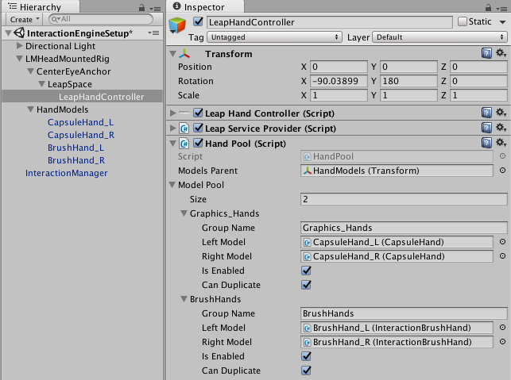
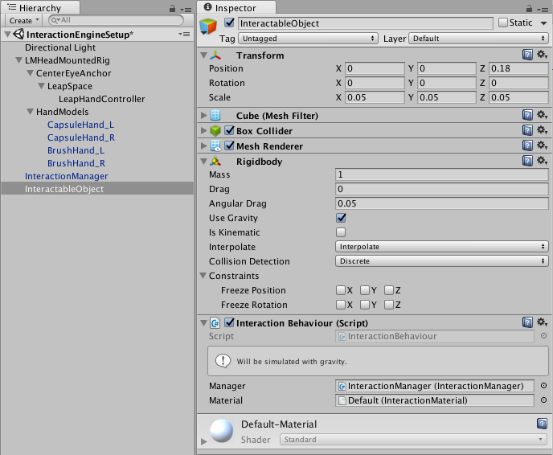
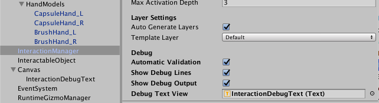

Setting up an Interaction Engine Scene¶
Start with a basic Leap-enabled scene; you can use Leap_Hands_Demo_VR as a template. Usually you will want one or more game objects to serve as a floor or table so that your interactable objects don’t fall to infinity or float away, depending on their rigid body settings.
The simplest Interaction Engine scene requires:
- A LeapHandController (typically as a part of the LMHeadMountedRig)
- An InteractionManager
- Three layers for use by the Interaction Engine (the InteractionManager can create anonymous layers for you automatically)
- Left and Right BrushHand models added to the hand controller hand pool (graphics hand models are also helpful)
- An interactable object to play with.
Note: You can visit the example scene included in the Interaction Engine module package to see what a complete setup looks like.
Adding an Interaction Manager¶
You can add an Interaction Manager to your scene in one of two ways:
- Either drag the InteractionManager prefab into your hierarchy from the Interaction Engine module’s prefab folder,
- Or create an empty game object and add the InteractionManager script component to it.
Make sure to assign the LeapProvider field of the manager to the provider you are using in your scene. Do this by dragging the LeapHandController game object to the LeapProvider property in the Unity Inspector.
A scene can contain multiple InteractionManager objects so that you can tailor the interaction settings to suit particular types of objects and interactions.
Adding brush hands¶
Next, you will want to add the ‘Brush Hands’ to your scene. These are special physical hand models – invisible to the user, but which influence the motion of objects inside the physics engine – that improve the interaction with physical objects. You can drag the left and right BrushHand prefabs into the scene as children of the HandModels object under the LMHeadMountedRig. Make sure to assign and enable them in the HandPool.
Assign the InteractionManager object to each of the BrushHand objects.
Remove the existing physics hands (RigidRoundHand-L and RigidRoundHand-R) from both the hierarchy and the HandPool. The normal physics models are incompatible with the Interaction Engine. (Also make sure to add some sort of graphical hand such as the capsule hand, or else you won’t be able to see your hands at all!)
The brush hands use a physics material with Bounciness set to zero and Bounce Combine set to Minimum.
Setting up layers¶
You have the option of letting the Interaction Manager set up the layers for you automatically. This has the benefit of being easier to use, but has some downsides. When using automatic layer generation, the layers will not be named, and so the interaction objects and hands game objects will look like they are on an empty layer at all times. If you do not otherwise you layer masks in your application, then the automatic setup should work fine; otherwise, you may want to uncheck the InteractionManager Auto Generate Layers flag and assign the layers manually as described in Interaction Engine Layers.
When setting up layers automatically, you will need to set the ‘Template Layer’ property to a layer of your choosing. The physics collision settings of thie template layer are copied to the interaction layers.
Creating an Interaction Object¶
Once you have your scene setup and ready, you can start adding interaction objects! To create an interaction object, just add an InteractionBehaviour component to a gameObject. There are a couple rules and restrictions for interaction objects:
- All interaction objects must have rigidbodies. If you don’t plan on the object using dynamics, just set the rigidbody to be kinematic.
- An interaction object must not be a child or parent of another interaction object.
- Set the Rigidbody interpolation setting to ‘Interpolate’. This greatly increases perceived fidelity.
When setting up an Interaction Behaviour component, make sure to link your behaviour to the Interaction Manager. Either the Interaction Manager must provide a default InteractionMaterial, or the InteractionBehavior of an interactable object must provide one. An InteractionMaterial controls many aspects of hand-object interaction. See Interaction Materials and Controllers for more information.
Interaction Manager Debug Options¶
The Interaction Manager component provides a number of debugging aides.
Automatic Validation – enables extra checks to validate that interactable objects and other Interaction Engine settings do not violate the requirements of the internal simulation. When such violations occur, warnings are printed to the debug output.
Show Debug Lines – Draws gizmo lines, such as the outlines of interactable objects and finger-to-object contacts. This feature requires a RuntimeGizmoManager in the scene. (You can add a RuntimeGizmoManager to your scene from the Assets/LeapMotion.scripts/Utils/ folder, by assigning the script to an empty game object in the scene.)
The colors of the lines drawn on interactable objects mean:
- Green – the object is currently grasped.
- Grey – the object is “asleep,” that is, the Interaction Engine is not actively simulating physics for that object. Interactable objects “wake up” when a hand touches them or pushes another interactable object into them.
- Blue – the object is “awake,” but is not grasped.
Show Debug Output – Prints Interaction Engine debugging text to the Unity Game view. If Debug Text View is assigned, the text is also written to the specified Unity Text object, which makes it possible to view the text while debugging in VR.
Debug Text View – A Unity UI Text component to receive the debug output text. Optional.